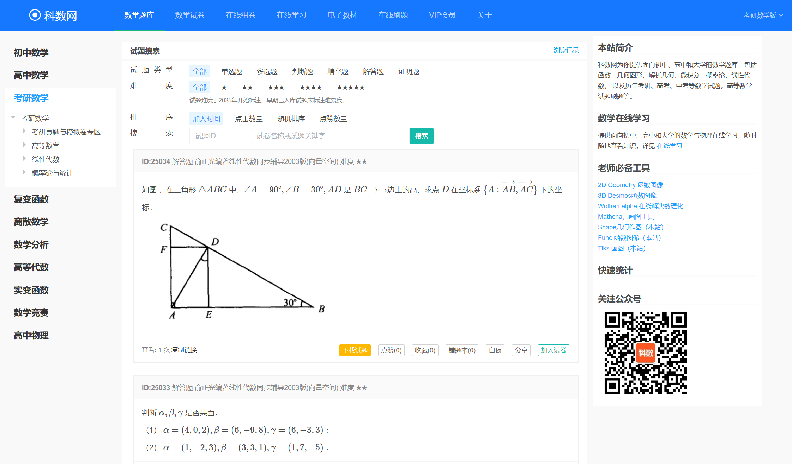

学习资料
复制链接
在新标签页打开
首页
收藏
设置
知识导航
微积分
线性代数
概率统计
微分方程
数学建模
高级数学
学习工具集成
Google
搜索
通用引擎：
Google Scholar
搜索
学术引擎：
宋浩高等数学
点击观看B站完整教学视频课程
全国数学建模竞赛
官方赛事信息与历年优秀作品

考研数学宝典
历年真题解析与专题训练
微积分
MIT微积分课程
MIT开放式课程，包含完整教学视频、讲义和习题。
可汗学院
从极限到积分完整知识体系，配套交互练习。
宋浩高等数学
B站知名数学教师，讲解深入浅出。
张宇高等数学
考研名师，系统讲解高等数学。
汤家凤高等数学
考研名师，重点突出，适合基础薄弱者。
武忠祥高等数学
考研名师，讲解细致，适合提高。
3Blue1Brown微积分
可视化微积分概念，直观理解数学原理。
UC Davis微积分习题集
包含大量习题和详细解答，按章节分类。
Utah微积分练习
提供交互式练习和在线测验。
UCLA微积分习题库
包含历年考试真题和习题解答。
线性代数
MIT Gilbert Strang 课程
线性代数经典课程，深入理解矩阵与向量空间。
交互式线性代数
佐治亚理工在线教材，支持3D可视化演示。
3Blue1Brown线性代数
直观理解线性代数的本质，可视化教学。
李永乐线性代数
考研名师，讲解系统全面。
张宇线性代数
考研名师，重点突出。
汤家凤线性代数
考研名师，适合基础薄弱者。
UC Davis线性代数习题集
包含习题、解答和在线工具。
UCLA线性代数练习
提供习题集和考试真题。
Utah线性代数习题库
包含交互式练习和详细解答。
概率统计
可视化概率统计
布朗大学交互式学习平台，直观理解统计概念。
概率论百科全书
包含600+个详细案例与解决方案。
张宇概率统计
考研名师，讲解系统全面。
汤家凤概率统计
考研名师，适合基础薄弱者。
王式安概率统计
考研名师，重点突出。
Statistics.com
提供在线统计课程和认证。
StatLect
免费的概率统计在线教材。
R语言统计
统计分析和数据可视化的专业工具。
StatLect习题集
提供概率统计习题和解答。
概率论习题集
包含详细的习题解答和解释。
Statistics.com练习
提供在线统计练习和测验。
微分方程
Paul's Notes
包含常微分方程与偏微分方程的详细解法手册。
张宇微分方程
考研名师，系统讲解微分方程。
汤家凤微分方程
考研名师，适合基础薄弱者。
武忠祥微分方程
考研名师，讲解细致。
UC Davis微分方程习题集
包含习题、解答和交互式演示。
Wolfram微分方程
提供微分方程求解器和示例。
UBC微分方程练习
提供习题集和详细解答。
Utah微分方程习题库
包含交互式练习和考试真题。
数学建模
COMAP 官网
美国大学生数学建模竞赛官方资源平台。
数学建模资源库
包含历年优秀论文和建模方法。
姜启源数学建模
数学建模经典教材作者讲解。
数学建模竞赛培训
系统讲解数学建模竞赛技巧。
数学建模软件教程
常用建模软件使用教程。
建模软件工具
常用数学建模软件介绍和使用教程。
建模案例库
包含各类实际问题的建模案例。
建模竞赛信息
各类数学建模竞赛信息和资源。
建模练习题库
提供历年建模竞赛真题和练习。
MCM/ICM真题库
美国大学生数学建模竞赛历年真题。
优秀论文解析
包含获奖论文分析和解题思路。
高级数学
Wolfram MathWorld
最全面的数学百科全书，涵盖实分析、复分析等高级内容。
实分析课程
系统讲解实分析理论和应用。
复分析课程
系统讲解复分析理论和应用。
泛函分析课程
系统讲解泛函分析理论和应用。
复分析习题集
包含复分析课程习题和解答。
实分析练习
提供实分析习题和详细解答。
数学分析习题库
包含交互式练习和考试真题。
拓扑学
提供拓扑学课程和学习资源。
学习工具集成
Desmos 科学计算器
功能强大的在线科学计算器，支持复杂计算和单位转换。
GeoGebra 图形计算器
专业的数学绘图工具，支持函数图像、几何图形绘制。
Wolfram Alpha
强大的知识计算引擎，可解答各类数学问题。
矩阵计算器
支持矩阵运算、特征值计算、行列式等线性代数运算。
Symbolab 解题器
智能数学解题工具，提供详细的解题步骤和解释。
Mathway
全面的数学问题解决工具，覆盖从基础到高级数学。
QuickMath
快速解决代数、微积分、矩阵等数学问题。
积分计算器
支持定积分、不定积分计算，提供详细步骤。
StatCrunch
专业的统计分析工具，支持数据可视化。
Social Science Statistics
提供各种统计检验和概率计算工具。
Mathcha 编辑器
在线数学公式编辑器，支持LaTeX语法。
Overleaf
在线LaTeX编辑器，适合数学论文排版。
微分方程求解器
支持常微分方程和偏微分方程的求解。
单位换算器
支持各种物理和数学单位的转换。
Mathway习题集
提供各类数学问题的示例和解答。
Symbolab练习
包含交互式练习和详细步骤。
QuickMath示例库
提供各类数学问题的示例和解答。
MATLAB教程
系统讲解MATLAB使用。
Python数学计算
Python数学计算库使用教程。
LaTeX排版教程
数学公式排版教程。